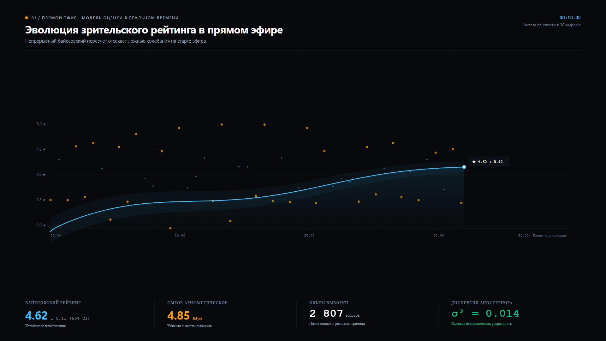
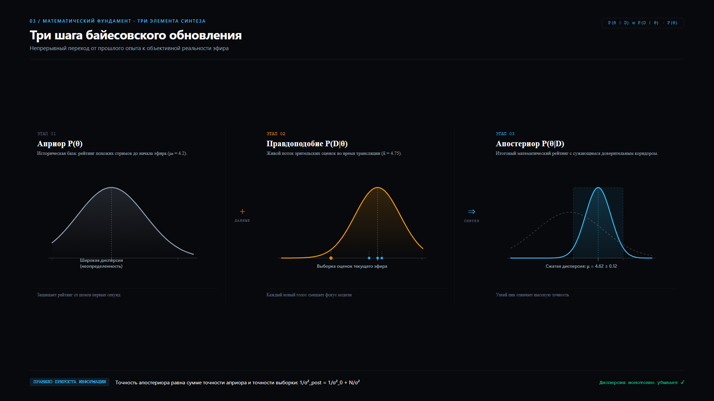
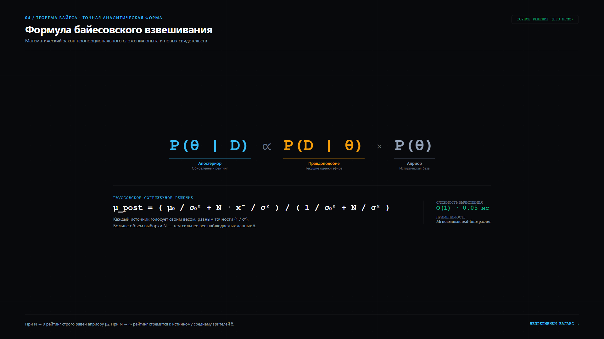
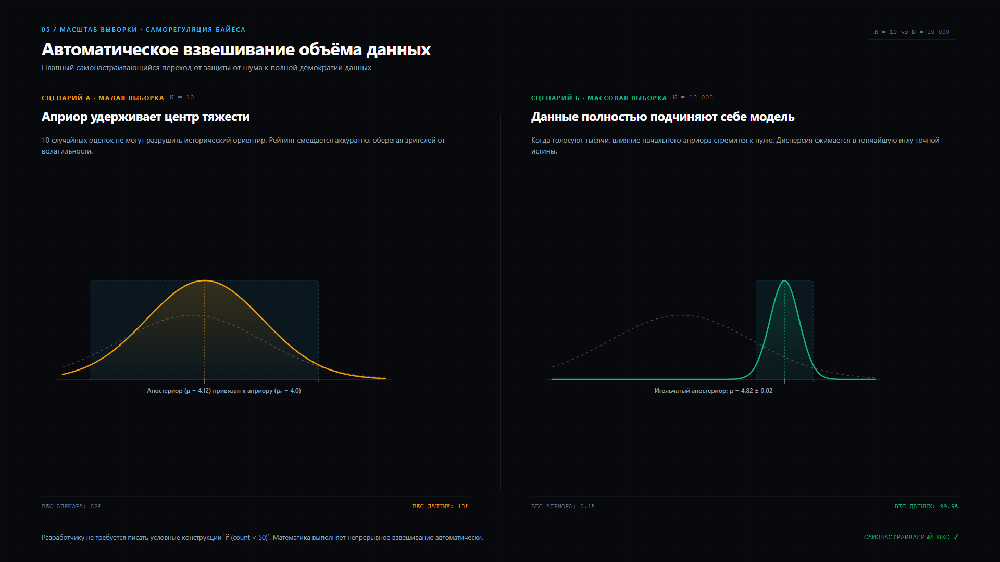
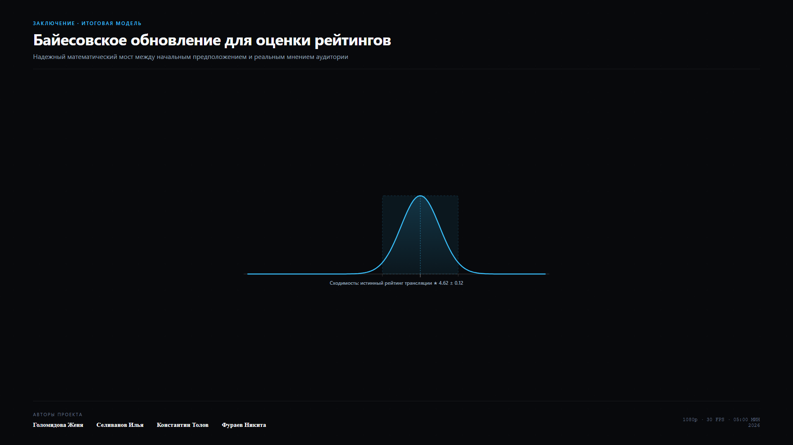

НАВИГАЦИЯ ПО ГЛАВАМ (КЛИК ДЛЯ ПЕРЕМОТКИ):
00:00 / 05:00
Файл готов к скачиванию · 14.9 МБ · MP4 1080p
Структура работы
Ключевые сцены фильма (High-Data-Ink)
8 глав · без ИИ-слопа

01 · ПРЯМОЙ ЭФИР
00:00 – 00:40
Эволюция зрительского рейтинга в прямом эфире
Непрерывный байесовский пересчет отсекает ложные всплески на старте эфира.

02 · МЕТОДОЛОГИЯ
00:40 – 01:20
Две ловушки оценки данных в прямом эфире
Паника от случайного шума первых 5 откликов против слепой инерции накопленной массы.

03 · СИНТЕЗ
01:20 – 02:00
Три шага байесовского обновления
Априор P(θ) + Правдоподобие P(D|θ) ⇒ Сжатый апостериорный пик P(θ|D).

04 · ФОРМУЛА
02:00 – 02:35
Формула байесовского взвешивания
Гауссовское аналитическое решение O(1): каждый источник голосует своим весом 1/σ².

05 · МАСШТАБ ВЫБОРКИ
02:35 – 03:00
Автоматическое взвешивание объёма данных
При N = 10 априор держит центр; при N = 10 000 данные полностью правят бал.

06 · КОНВЕЙЕР
03:00 – 03:45
Непрерывный конвейер вычислений
Входящий поток → Окно наблюдений → Формула Гаусса → Выдача в плеер за 0.05 мс.

07 · ТЕСТИРОВАНИЕ
03:45 – 04:30
Сравнение на реальном 40-минутном эфире
Иммунитет к всплескам троллей и мгновенная фиксация реального обрыва трансляции.

08 · ФИНАЛ
04:30 – 05:00
Предостережения развертывания и титры
Три инженерных правила внедрения в production и авторский состав.